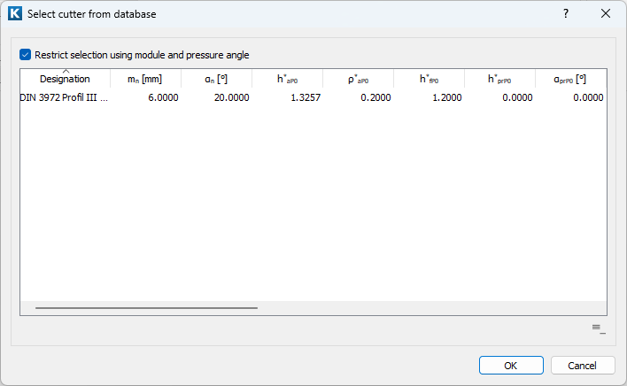
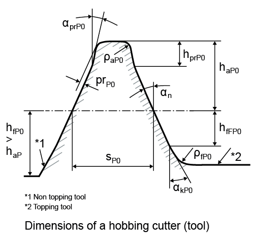
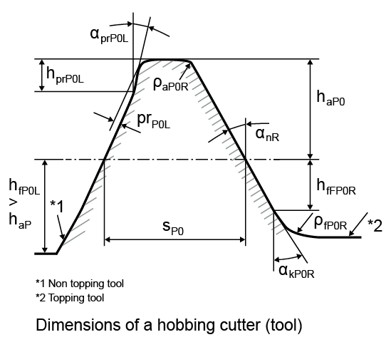

|
|
|


工具：滚刀
从列表框中选择所需的滚刀，然后点击其旁边的加号按钮：

图 15.25：滚刀选择窗口
如果您选择一种齿廓（例如 DIN 3972 III），列表会显示相关刀具文件中存在的刀具。（刀具文件的名称在数据库中录入。）点击复选框，只显示模数和压力角与齿轮几何中定义的数值相匹配的刀具。默认情况下，只显示与所选模数和压力角匹配的刀具。如果从选项卡中选择刀具，则满足条件 cos(αn)*mn = cos(αn1)*mn1 的刀具也会显示。标准公差设置为 + - 1°。

图 15.26：工具配置的参考齿廓：滚刀
用于非对称齿轮的滚刀：

图 15.27：配置工具中非对称齿轮的参考齿廓：滚刀
选择以直接定义您自己的刀具：
- 刀具齿顶高系数 h*aP0 定义刀具齿顶高，进而定义齿轮齿根圆。通常取值为 1.25。
- 刀具齿顶圆角半径系数 ϱ*aP0 定义刀具齿顶圆角半径，进而定义齿轮齿根半径。齿顶圆角半径受最大几何可能半径的限制，取决于齿廓齿顶高和压力角。该值通常在 0.2 到 0.38 范围内。
- 刀具齿根高系数 h*fP0 定义刀具齿根高，进而（对于切顶刀具）定义齿顶圆。通常取值为 1。对于非切顶刀具，刀具与齿轮齿顶圆之间必须留有一定间隙，软件会对此进行检查。当参考齿廓的齿顶高为 1 时，通常取值为 1.2。
- 齿根圆角半径系数 ϱ*fP0 定义刀具的齿根圆角半径。在切顶刀具中，多数情况下齿根圆角会在齿轮上切出齿顶倒圆。根据几何条件的不同，齿顶处可能出现倒角或棱角。
- 凸起高度系数 h*prP0 定义凸起长度（从齿顶高量起）。凸起用作人为根切，以防止产生磨削缺口。凸起高度可根据凸起尺寸和角度计算。
- 凸起角度 α*prP0 通常小于压力角。但对于某些特殊刀具，它也可能更大。在这种情况下不存在根切，但齿轮根部的齿厚较大。凸起角度可根据凸起尺寸和高度计算。如果输入 0，则不存在凸起。
- 计算重合度时，凸起在达到某一特定值之前不予考虑，因为对于齿廓修形，假设存在受载接触。要设置用于考虑有效直径处凸起和挖根齿根齿面的阈值，请选择“计算 > 设置”（参见"计算"章）菜单选项。
- 齿根齿形高度系数 hFfP0* 定义具有压力角 αn 的刀具直齿面部分的末端。该高度从刀具参考线量起。
- 斜面角 aKP0* 定义刀具中存在的斜面齿面或齿廓修形。该长度使用齿根齿形高度系数确定。该角度大于压力角 αn。如果输入值 0，则忽略此部分。
- 计算直径和重合度时，用于凸起的阈值在此处同样予以考虑（参见"计算"章）。
- 对于常用刀具，参考线的齿厚系数 s*P0 等于 π/2*P0 = π/2。对于特殊刀具，可覆盖该值。
- 对于非切顶刀具，齿轮参考齿廓的齿顶高系数 h*aP 由齿轮参考齿廓的常用值 h* aP = 1 定义，或使用齿轮的齿顶圆定义。该值可通过换算齿顶圆数值计算得出。
点击 按钮（位于数据源输入字段旁边），可将滚刀写入数据库（仅当滚刀定义为自定义输入时）。一旦进入数据库，该滚刀即可在“数据源”下选择。
Tool: Hobbing cutters
Select the hobbing cutter you require from the selection list and then click the Plus button beside it:
Figure 15.25: Hobbing cutter selection window
If you select a profile (e.g. DIN 3972 III), the list displays the tools that are present in the relevant cutter file. (The name of the cutter file is entered in the database.) Click on the checkbox to only display tools whose modules and pressure angles match those defined in the gear geometry. By default, only tools that match the selected module and pressure angle are displayed. If tools are selected from the tab, cutters that meet the condition cos(αn)*mn = cos(αn1)*mn1 are also displayed. The standard tolerance is set to + - 1°.
Figure 15.26: Reference profile for tool configuration: Hobbing cutters
Hobbing cutters for asymmetrical gears:
Figure 15.27: Reference profile for asymmetrical gears for the configuration tool: Hobbing cutters
Select to directly define your own cutter:
- The cutter addendum coefficient h*aP0 defines the cutter addendum, which then defines the gear root circle. A usual value is 1.25.
- The cutter tip radius coefficient ϱ*aP0 defines the cutter tip radius, which then defines the gear root radius. The tip radius is limited by the maximum geometrically possible radius, depending upon the profile addendum and the pressure angle. This value usually lies in the range 0.2 to 0.38.
- The cutter's dedendum coefficient h*fP0 defines the cutter's dedendum , which then defines the tip circle, for a topping tool. A usual value for this is 1. In a non-topping tool, there has to be a certain amount of clearance between the tool and the gear tip circle, which the software checks. 1.2 is a usual value for an addendum of the reference profile of 1.
- The root radius coefficient ϱ*fP0 defines the root radius of the cutter. In a topping tool, the root radius cuts a tip rounding on the gear in most cases. Depending on the geometric conditions, a chamfer or corner may occur on the tip.
- The protuberance height coefficient h*prP0 defines the protuberance length, measured from the addendum. The protuberance is used as an artificial undercut to prevent a grinding notch from being created. The protuberance height can be calculated from the protuberance size and angle.
- The protuberance angle α*prP0 is usually smaller than the pressure angle. However, in the case of some special cutters, it may also be larger. In this case, no undercut is present, but the tooth thickness at the root of the gear is larger. The protuberance angle can be calculated from the protuberance size and height. If 0 is input, no protuberance is present.
- When calculating the contact ratio, protuberance is not taken into account until it reaches a certain value because a contact under load is assumed for profile modifications. To set the threshold value that takes into account protuberance and buckling root flank for active diameters, select the Calculation > Settings (see chapter Calculations)menu option.
- The root form height coefficient hFfP0* defines the end of the straight flank part of the tool with a pressure angle αn. The height is measured from the tool reference line.
- The ramp angle aKP0* defines a ramp flank or a profile modification that is present in the cutter. The length is determined using the root form height coefficient. The angle is greater than the pressure angle αn. If you enter the value 0, this part will be ignored.
- The threshold value used for protuberance is also taken into consideration here when calculating the diameter and the contact ratio (see chapter Calculations).
- For the usual tools, the tooth thickness coefficient of reference line s*P0 equals s*P0 = π/2. The value can be overwritten for special tools.
- The addendum coefficient of the gear reference profile h*aP for a non-topping cutter is defined with the usual value of h* aP = 1 of the gear reference profile or using the gear's tip circle. The value can be calculated by converting the tip circle value.
By clicking on the button (next to the data source input field), the hobbing cutter can be written into the database (only if the hob is defined as own input). Once it is in the database, the hob is available for selection under Data source.